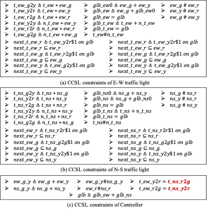

CCSL Specification Synthesis
for A Traffic Light Control System
As a specific real-time embedded system, traffic light control systems are widely used in worldwide at road intersections to manage the traffic network flows. Figure 1 shows one example of a cross intersection with traffic lights.
Figure 1: A cross intersection with traffic lights
This example is about a traffic light system to regulate traffic flow at the cross intersection, which involves two traffic lights controlling the North-South lanes and East-West lanes, respectively. Here, each traffic light has three LED signals with green, yellow, and red colors, respectively. Note that at a time only one color is allowed to be shown by a traffic light, and the colors are shown following an order of green, yellow, and red in each iteration.
Figure 2: Traffic light statemachine and its CCSL template
At the early design stage, it is difficult for requirement engineers to directly figure out the CCSL specification of the whole traffic light control system for the cross intersection. Instead, they would like to construct the CCSL specification in a bottom-up manner. Firstly, they would like to resort to the CCSL template of a single traffic light. The left part of Figure 2 presents the statemachine for the traffic light and its corresponding CCSL specification. The statemachine consists of three states, i.e., “g”, “y”, and “r”, indicating the states for green, yellow, and red colors, respectively, and “t” is a transfer signal to control transitions between states. Once the traffic light receives a transfer signal, it will change its current state immediately.
Based on the common sense, the timing behaviors of traffic lights should obey the following properties:
Property 1: A
traffic light shall never turn on two or more of its LEDs at the same time.
Property 2: A traffic light must change its current state immediately after
receiving a transfer signal .
Property 3: Without receiving any transfer signal , a traffic light
should not change its current state.
Property 4: The N-S traffic light and the E-W traffic light cannot be in the state of green light or yellow light simultaneously.
Property 5: If the N-S traffic light is red, the E-W traffic light cannot turn red simultaneously, and vice versa.
The right part of Figure 2 presents the CCSL constraints for a traffic light, which are generated from both the statemachine diagram shown in Figure 2 and the specified properties 1-3. These constraints can be used as the CCSL template of a traffic light to model its timing behaviors.

Figure 3: Design of the traffic light control system
Figure 3 shows the design of the traffic light system, which includes the E-W (East-West) traffic light, the N-S (North-South) traffic light, and a controller. Here, we use the controller to conduct the synchronization between the two traffic lights, where we use the clocks t_ew and t_ns to denote the transfer signals for the E-W traffic light and N-S traffic light, respectively. Based on the above safety properties 4-5, requirement engineers need to design a controller to regulate the intersection traffic via transfer signals. Since properties 4-5 can be directly encoded into CCSL constraints, requirement engineers only need to figure out the synchronization implementation for t_ew and t_ns defined in statemachines. The annotation @syn_i in Figure 3 indicates that the associated transition in the current statemachine needs to be synchronized with a transition in the other state machine, where is the synchronization index. The annotation @syn_? indicates that the counterpart transition for synchronization is unknown, where the synchronization index “?” needs to be figured out by the synthesizer. As shown in Figure 3, when a traffic light turns from red to green or from yellow to red, the traffic light of the other direction also needs to change accordingly at the same time. In Figure 3, the notations @syn_1 and @syn_2 in the left statemachine are used to enable the synchronization between two traffic lights. However, in the right statemachine such synchronization information is unknown. As shown in Figure 3, the CCSL constraints of the controller are generated from two properties (i.e., property 4 and property 5) and two incomplete synchronizations (i.e., Syn1 and Syn2), where the incomplete synchronizations are encoded into CCSL constraints as follows:
For both the incomplete CCSL model shown in Figure 3 and specified properties, we generate an incomplete CCSL specification with 11 atomic clocks and 61 CCSL constraints (31 expression constraints and 30 relation constraints), leaving the timing behaviors of interactions between traffic lights as unknown holes. Figure 4 shows the incomplete CCSL specification generated from the templates of traffic lights and the properties 1-5.
Figure 4: Incomplete CCSL specification generated from templates and properties
To fill the holes by using our RL-based CCSL synthesis approach, we set the number of RL training rounds to 500. To guide the synthesis, we generated 5 timing traces with a length of 50 each, which describe the behaviors of different traffic scenarios. Figure 5 shows the synthesis result, where the filled parts are in red, denoting that the transition from ns_r to ns_g is involved in Syn2 and the transition from ns_y to ns_r is involved in Syn1.

Figure 5: Synthesized complete CCSL specification for the traffic light control system